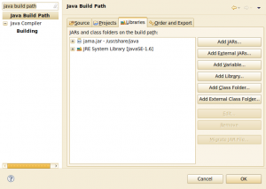
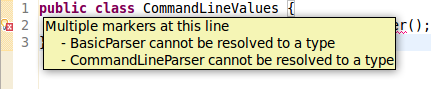

If you are using Eclipse, you might want to add your arguments. To specify them, go to: Run → Run Configurations ... → Arguments
args4j
args4j is a small Java class library that makes it easy to parse command line options/arguments in your CUI application.
Source: args4j.kohsuke.org
Lets see how easy it really is.
Requirements
First, you have to get the package. It is not in my Ubuntu-Version, but Ubuntu Quantal will have args4j. The package is called libargs4j-java.
If you can't install it this way, you have to download args4j. Currently, it is args4j-2.0.21.jar.
You can add this as an external jar to Eclipse:
- Right-click on your project.
- Select "Properties"
- Type "java build path" in the input field at the upper left corner of the window.
Now it should look like this:
{kind=link}

Now you have to click on "Add External Jar" and add the args4j.jar file.
Source Example
As always in Java, you add another class for parsing your command line values. I've called it CommandLineValues.java and it does only check for the command line argument -i FILE or --input FILE.
import java.io.File;
import org.kohsuke.args4j.CmdLineException;
import org.kohsuke.args4j.CmdLineParser;
import org.kohsuke.args4j.Option;
/**
* This class handles the programs arguments.
*/
public class CommandLineValues {
@Option(name = "-i", aliases = { "--input" }, required = true,
usage = "input file with two matrices")
private File source;
private boolean errorFree = false;
public CommandLineValues(String... args) {
CmdLineParser parser = new CmdLineParser(this);
parser.setUsageWidth(80);
try {
parser.parseArgument(args);
if (!getSource().isFile()) {
throw new CmdLineException(parser,
"--input is no valid input file.");
}
errorFree = true;
} catch (CmdLineException e) {
System.err.println(e.getMessage());
parser.printUsage(System.err);
}
}
/**
* Returns whether the parameters could be parsed without an
* error.
*
* @return true if no error occurred.
*/
public boolean isErrorFree() {
return errorFree;
}
/**
* Returns the source file.
*
* @return The source file.
*/
public File getSource() {
return source;
}
}
Here is some part of the main file:
public static void main(String[] args) {
CommandLineValues values = new CommandLineValues(args);
CmdLineParser parser = new CmdLineParser(values);
try {
parser.parseArgument(args);
} catch (CmdLineException e) {
System.exit(1);
}
// Now you can use the command line values
List<ArrayList<ArrayList<Integer>>> matrices =
read(values.getSource());
ArrayList<ArrayList<Integer>> A = matrices.get(0);
ArrayList<ArrayList<Integer>> B = matrices.get(1);
int[][] C = ijkAlgorithm(A, B);
printMatrix(C);
}
Usage Examples
If you do not specify the required parameters, you get a quite good error message:
moose@pc07:~/Desktop$ java -jar matrix-multiplication.jar
Option "-i (--input)" is required
-i (--input) FILE : input file with two matrices
Help is not automatically generated:
moose@pc07:~/Desktop$ java -jar matrix-multiplication.jar --help
"--help" is not a valid option
-i (--input) FILE : input file with two matrices
If you want to have default parameters, you simply assign the values to the attributes:
@Option(name = "-l", aliases = { "--leafsize" }, required = false,
usage = "input file with two matrices")
private int leafsize = 32;
Note: How can I prevent Eclipse from adding the 'final' for certain lines of Java code?
Commons CLI
Installation
As for args4j, they offer a jar file which is in commons-cli-1.2-bin.tar.gz on the download-page.
If you just want to test if you have the required packages, copy this piece of code to Eclipse:
public class CommandLineValues {
CommandLineParser parser = new BasicParser();
}
If you get the following error, you don't have the required org.apache.commons.cli:
{kind=link}

Usage examples
I have not found a single, complete and working usage example.
See also
- Is there a good command line argument parser for Java? - A lot of other command line parsers are mentioned for Java.
- args4j JavaDoc
- Apache CLI JavaDoc
- How to parse command line arguments in Python